A Bayesian analysis leads directly and naturally to making predictions about future observations from the random process that generated the data.
Prediction is also useful for tuning prior distributions, and for checking if model assumptions seem reasonable in light of observed data.
Example 10.1 Do people prefer to use the word “data” as singular or plural? FiveThirtyEight conducted a poll to address this question (and others). Rather than simply ask whether the respondent considered “data” to be singular or plural, they asked which of the following sentences they prefer:
Some experts say it’s important to drink milk, but the data is inconclusive.
Some experts say it’s important to drink milk, but the data are inconclusive.
Suppose we wish to study the opinions of students in Cal Poly statistics classes regarding this issue. That is, let \(\theta\) represent the population proportion of students in Cal Poly statistics classes who prefer to consider data as a singular noun, as in option a) above (“the data is”).
Before proceeding, consider the context of this problem and sketch your prior distribution for \(\theta\). What are the main features of your prior?
To illustrate ideas, we’ll start with a prior distribution which places probability 0.01, 0.05, 0.15, 0.30, 0.49 on the values 0.1, 0.3, 0.5, 0.7, 0.9, respectively.
Before observing any data, suppose we plan to randomly select a single Cal Poly statistics student. Consider the unconditional prior probability that the selected student prefers data as singular. (This is called a prior predictive probability.) Explain how you could use simulation to approximate this probability.
Compute the prior predictive probability from the previous part.
Before observing any data, suppose we plan to randomly select a sample of 35 Cal Poly statistics students. Consider the unconditional prior distribution of the number of students in the sample who prefer data as singular. (This is called a prior predictive distribution.) Explain how you could use simulation to approximate this distribution. In particular, how could you use simulation to approximate the prior predictive probability that exactly 31 students in the sample prefer data as singular?
Compute and interpret the prior predictive probability that exactly 31 students in a sample of size 35 prefer data as singular.
Example 10.2 Continuing Example 10.1. Suppose that we observe a sample of 35 Cal Poly statistics students in which 31 prefer data as singular.
Explain how you would use simulation to approximate the posterior distribution of \(\theta\).
Find the posterior distribution of \(\theta\).
Example 10.3 Continuing Example 10.2. After observing a sample of 35 Cal Poly statistics students in which 31 prefer data as singular, suppose we plan to collect more data.
Suppose we plan to randomly select an additional Cal Poly statistics student. Consider the posterior predictive probability that this student prefers data as singular. Explain how you could use simulation to estimate this probability.
Compute the posterior predictive probability from the previous part.
Suppose we plan to collect data on another sample of 35 Cal Poly statistics students. Consider the posterior predictive distribution of the number of students in the new sample who prefer data as singular. Explain how you could use simulation to approximate this distribution. In particular, how could you use simulation to approximate the posterior predictive probability that exactly 31 students in the sample prefer data as singular? (Of course, the sample size of the new sample does not have to be 35; however, we’re keeping it the same so we can compare the prior and posterior predictions.)
Compute and interpret the posterior predictive probability that exactly 31 students in a sample of size 35 prefer data as singular.
The predictive distribution of a measured variable \(y\) is the marginal distribution (of the unobserved values) after accounting for the uncertainty in the parameters \(\theta\).
A prior predictive distribution is calculated using the prior distribution of the parameters.
A posterior predictive distribution is calculated using the posterior distribution of the parameters, conditional on the observed data.
Be sure to carefully distinguish between posterior distributions and posterior predictive distributions (or between prior distributions and prior predictive distributions.)
Prior and posterior distributions are distributions on values of the parameters. These distributions quantify the degree of uncertainty about unknown parameters \(\theta\) (before and after observing data).
Prior and posterior predictive distributions are distributions on potential values of the measured variable (data). Predictive distributions reflect sample-to-sample variability of the sample data, while also accounting for the uncertainty in the parameters.
Simulation is an effective tool in approximating posterior (or prior) predictive distributions.
Step 1: Simulate a value of \(\theta\) from its posterior distribution (or prior distribution).
Step 2: Given this value of \(\theta\) simulate a value of \(y\) from \(f(y|\theta)\), the data model conditional on \(\theta\).
Repeat many times to simulate many \((\theta, y)\) pairs, and summarize the values of \(y\) to approximate the posterior predictive distribution (or prior predictive distribution).
Example 10.4 Continuing Example 10.1. We’ll use a grid approximation and assume that any multiple of 0.0001 is a possible value of \(\theta\): 0, 0.0001, 0.0002, …, 0.9999, 1.
Assume the prior distribution for \(\theta\) is proportional to \(\theta^2\). Plot this prior distribution and describe its main features. Is the prior distribution truly discrete or essentially continuous?
Given the shape of the prior distribution, explain why we might not want to compute central prior credible intervals. Suggest an alternative approach, and compute a 98% prior credible interval for \(\theta\).
Before observing any data, suppose we plan to randomly select a sample of 35 Cal Poly statistics students. Let \(y\) represent the number of students in the selected sample who prefer data as singular. Use simulation to approximate the prior predictive distribution of \(y\) and plot it. Is the prior predictive distribution truly discrete or essentially continuous?
Find a 95% prior prediction interval for \(y\). Write a clearly worded sentence interpreting this interval in context.
Example 10.5 Continuing Example 10.4. Suppose that we observe a sample of 35 Cal Poly statistics students in which 31 prefer data as singular.
Find the posterior distribution of \(\theta\), plot it and describe its main features, and find and interpret a 98% central posterior credible interval for \(\theta\). Is the posterior distribution truly discrete or essentially continuous?
Suppose we plan to randomly select another sample of 35 Cal Poly statistics students. Let \(\tilde{y}\) represent the number of students in the new sample who prefer data as singular. Use simulation to approximate the posterior predictive distribution of \(\tilde{y}\) and plot it. Is the posterior predictive distribution truly discrete or essentially continuous? (Of course, the sample size of the new sample does not have to be 35. However, we’re keeping it the same so we can compare the prior and posterior predictions.)
Find a 95% posterior prediction interval for \(\tilde{y}\). Write a clearly worded sentence interpreting this interval in context.
Example 10.6 Continuing Example 10.5. Now suppose instead of using the Cal Poly sample data (31/35) to form the posterior distribution of \(\theta\), we had used the data from the FiveThirtyEight study in which 865 out of 1093 respondents preferred data as singular.
Find the posterior distribution of \(\theta\), plot it and describe its main features, and find and interpret a 98% central posterior credible interval for \(\theta\). How does the posterior based on the FiveThirtyEight data compare to the posterior distribution based on the Cal Poly sample data (31/35)? Why?
Again, suppose we use the FiveThirtyEight data to form the posterior distribution of \(\theta\). Suppose we plan to randomly select a new sample of size 35. Let \(\tilde{y}\) represent the number in the new sample who prefer data as singular. Use simulation to approximate the posterior predictive distribution of \(\tilde{y}\) and plot it. Find a 95% posterior prediction interval for \(\tilde{y}\). How does the predictive distribution which uses the posterior distribution based on the FiveThirtyEight data compare to the one based on the Cal Poly sample data (31/35)? Why?
Be sure to distinguish between a prior/posterior distribution and a prior/posterior predictive distribution.
A prior/posterior distribution is a distribution on potential values of the parameters\(\theta\). These distributions quantify the degree of uncertainty about the unknown parameter \(\theta\) (before and after observing data).
A prior/posterior predictive distribution is a distribution on potential values of the data\(y\). Predictive distributions reflect sample-to-sample variability of the sample data, while accounting for the uncertainty in the parameters.
Even if parameters are essentially “known” — that is, even if the prior/posterior SD of parameters is small — there will still be sample-to-sample variability reflected in the predictive distribution of the data, mainly influenced by the size \(n\) of the sample being “predicted” (or unit-to-unit variability for the predictive distribution of a single observation).
Example 10.7 Suppose we want to estimate \(\theta\), the population mean hours of sleep on a typical night for Cal Poly students. Assume that sleep hours, \(y\), for students follow a Normal distribution with unknown mean \(\theta\) and known standard deviation 1.5 hours. (Known population SD is an unrealistic assumption that we use for simplicity here.)
Assume a Normal(7.5, 0.5) prior distribution for \(\theta\).
Describe what the prior distribution represents. Find and interpret a 98% prior credible interval.
Explain how you would use simulation to approximate the prior predictive distribution of \(y\). Use simulation to approximate a 95% prior prediction interval, and interpret it.
Now suppose you observe sleep hours (rounded to one decimal place) of 6.8 and 7.2 for a sample of 2 students. Explain how, in principle, you could use simulation to approximate the posterior distribution. (To preview what lies ahead: what issues would you experience with this method in practice?)
Suppose that the posterior distribution is approximately Normal with mean 7.4 and SD 0.4. Describe what the posterior distribution represents. Find and interpret a 98% posterior credible interval.
Explain how you would use simulation to approximate the posterior predictive distribution of \(y\). Use simulation to approximate a 95% posterior prediction interval, and interpret it.
Now suppose you observe a very large sample of students (with a sample mean of 7.0), and the posterior distribution is Normal with mean 7.0 and SD 0.001. Without doing any calculations, approximate the posterior predictive distribution of \(y\) and a 95% posterior prediction interval.
10.1 Notes
10.1.1 Prior predictive probability of success for single trial
Simulate a value of \(\theta\) from the prior distribution.
Given the value of \(\theta\), construct a spinner that lands on success with probability \(\theta\). Spin the spinner once and record the result, success or not.
Repeat steps 1 and 2 many times, and find the proportion of repetitions which result in success. This proportion approximates the (unconditional) prior predictive probability of success.
n_rep =1000theta =seq(0.1, 0.9, 0.2)prior =c(0.01, 0.05, 0.15, 0.30, 0.49)# simulate values of theta from the priortheta_sim =sample(theta, n_rep, replace =TRUE, prob = prior)# for each simulated value of theta, simulate a single trial from Binomial(1, theta): "success" = 1, "failure" = 0 y_sim =rbinom(n_rep, size =1, theta_sim)sim =data.frame(theta_sim, y_sim)sim |>head(10) |>kbl() |>kable_styling()
Figure 10.2: Probability of success on single trial, for different values of theta in Example 10.1. Color represents the prior probability of theta, with darker colors corresponding to higher prior probability.
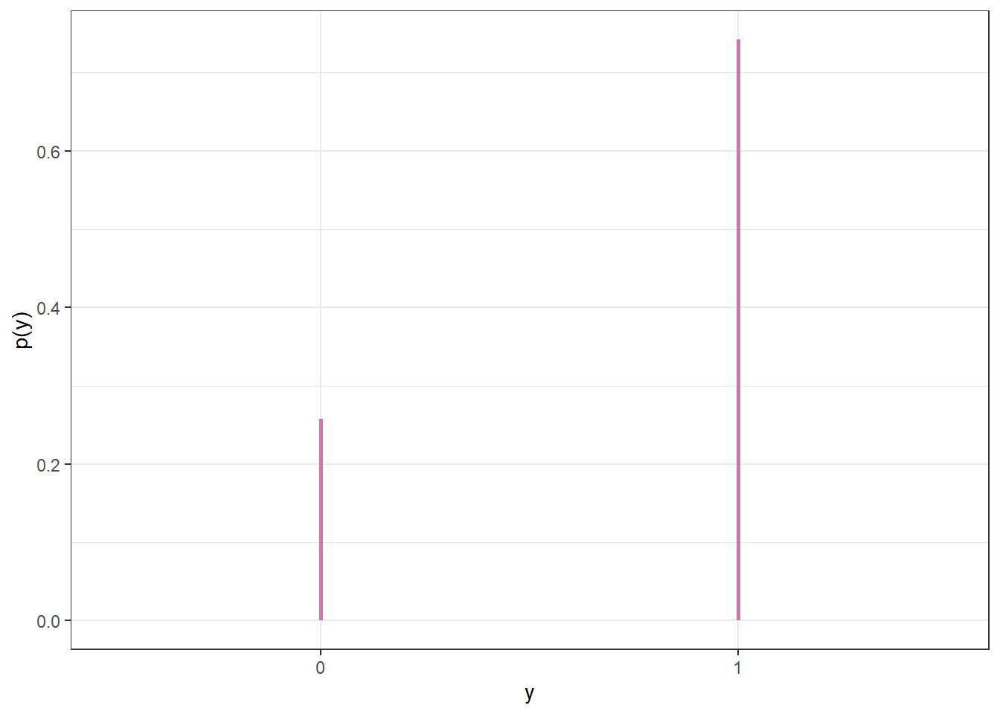
Figure 10.3: Prior predictive probability of success on single trial
10.1.2 Prior predictive distribution of sample count of success
Simulate a value of \(\theta\) from the prior distribution.
Given the value of \(\theta\), construct a spinner that lands on success with probability \(\theta\). Spin the spinner 35 times and count \(y\), the number of spins that land on success.
Repeat steps 1 and 2 many times, and record the number of successes (out of 35) for each repetition. Summarize the simulated \(y\) values to approximate the prior predictive distribution. To approximate the prior predictive probability that exactly 31 students in a sample of size 35 prefer data as singular, count the number of simulated repetitions that result in 31 successes (\(y = 31\)) and divide by the total number of simulated repetitions.
n_rep =10000theta =seq(0.1, 0.9, 0.2)prior =c(0.01, 0.05, 0.15, 0.30, 0.49)# simulate values of theta from the priortheta_sim =sample(theta, n_rep, replace =TRUE, prob = prior)# for each simulated value of theta, simulate number of successes from Binomial(35, theta)y_sim =rbinom(n_rep, size =35, theta_sim)sim =data.frame(theta_sim, y_sim)sim |>head(10) |>kbl() |>kable_styling()
(a) Sample-to-sample distribution of \(y\), the number of successes in samples of size \(n=35\) for different values of theta in Example 10.1. Color represents the prior probability of $ heta$, with darker colors corresponding to higher prior probability.
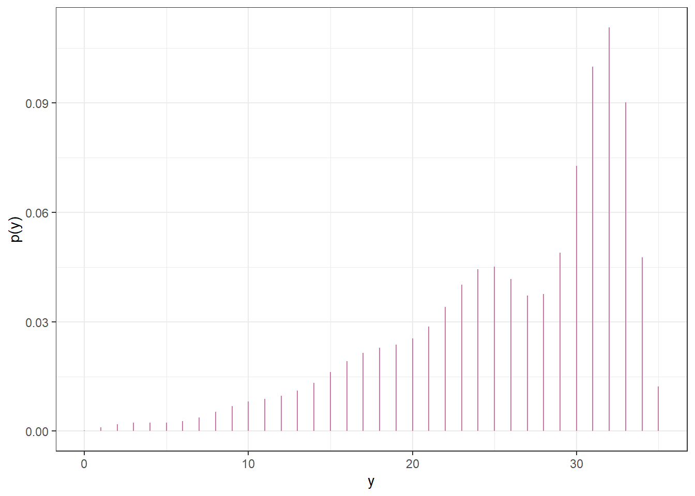
(b) Prior predictive distribution of \(y\)
Figure 10.5: Prior predictive simulation
10.1.3 Posterior distribution - simulation
Simulate a value of \(\theta\) from the prior distribution.
Given the value of \(\theta\), construct a spinner that lands on success with probability \(\theta\). Spin the spinner 35 times and count \(y\), the number of spins that land on success.
Repeat steps 1 and 2 many times, and record the number of successes (out of 35) for each repetition.
Discard any repetitions for which \(y\neq 31\).For the remaining repetitions (with \(y=31\)) summarize the simulated \(\theta\) values to approximate the posterior distribution of \(\theta\).
y_obs =31# same (theta, y) simulation as before; highlight y == 31theta_y_sim_plot +annotate("rect", xmin =0, xmax =1,ymin = y_obs -0.4, ymax = y_obs +0.4, alpha =0.5,color = bayes_col["posterior"],fill = bayes_col["posterior"]) +theme_bw()# Only keep (theta, y) pairs with y = 31, and summarize the theta valuessim_posterior_table = sim |>filter(y_sim == y_obs) |>count(theta_sim, name ="freq") |>mutate(rel_freq = freq /sum(freq))sim_posterior_table |>ggplot(aes(x = theta_sim,y = rel_freq)) +geom_point(col = bayes_col["posterior"], size =3) +geom_line(linetype ="dashed", col = bayes_col["posterior"]) +scale_x_continuous(limits =c(0, 1), breaks = theta) +labs(x ="theta",y ="Posterior") +theme_bw()
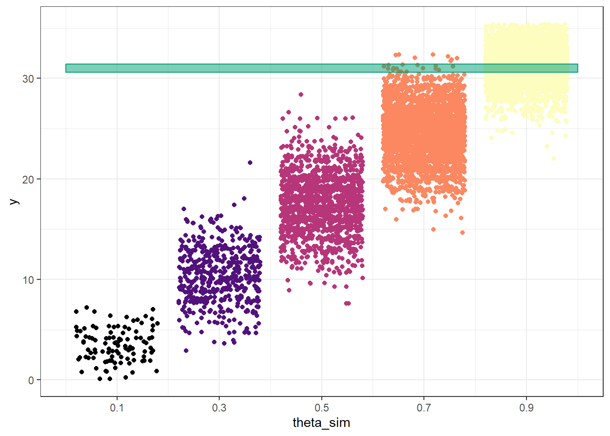
(a) (theta, y) pairs for samples of size 35: theta simulated from the prior; y simulated from Binomial(35, theta)
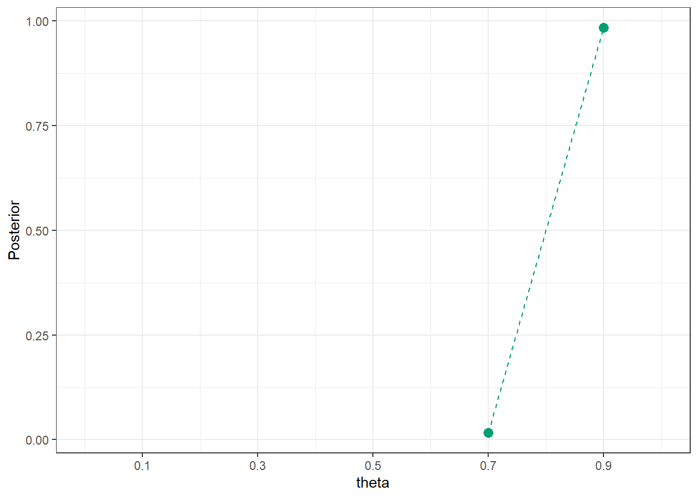
(b) Summary of simulated theta values from repetitions with \(y=31\) values to approximate posterior distribution of theta given \(y=31\)
Figure 10.6: Approximating the posterior distribution via simulation
10.1.4 Posterior distribution - calculation
# observed datan =35y_obs =31# likelihood of observed data for each thetalikelihood =dbinom(y_obs, n, theta)# posterior is proportional to product of prior and likelihoodproduct = prior * likelihoodposterior = product /sum(product)bayes_table =data.frame(theta, prior, likelihood, product, posterior)bayes_table |>adorn_totals("row") |>kbl(digits =4) |>kable_styling()
theta
prior
likelihood
product
posterior
0.1
0.01
0.0000
0.0000
0.0000
0.3
0.05
0.0000
0.0000
0.0000
0.5
0.15
0.0000
0.0000
0.0000
0.7
0.30
0.0067
0.0020
0.0201
0.9
0.49
0.1998
0.0979
0.9799
Total
1.00
0.2065
0.0999
1.0000
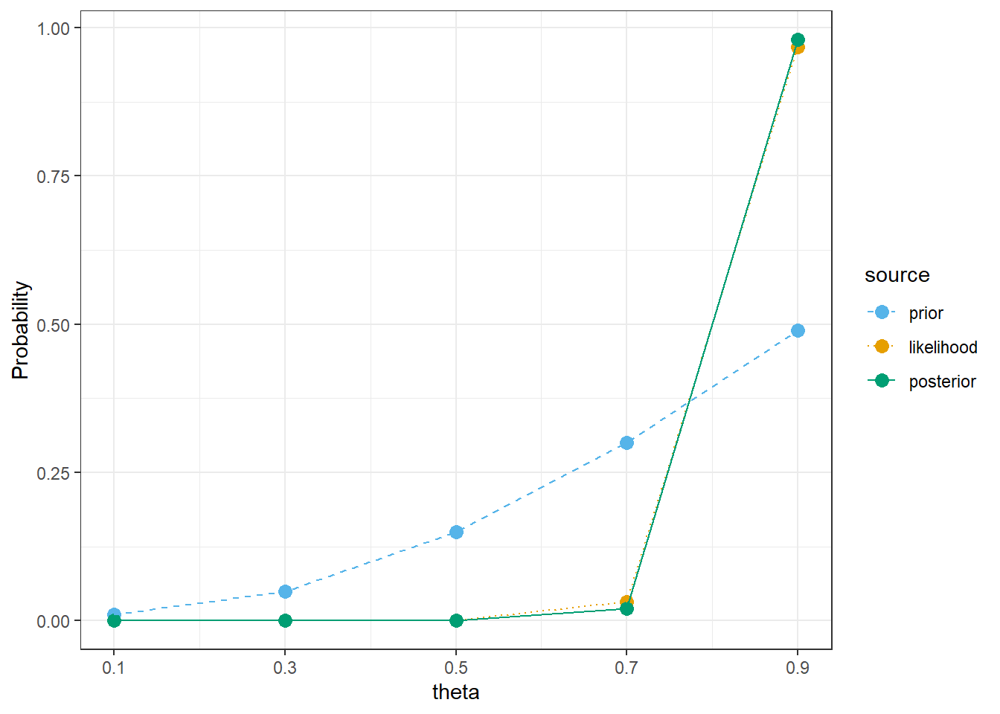
10.1.5 Posterior predictive probability of success for single trial
Similar to the prior predictive, but now simulate \(\theta\) from the posterior distribution instead of the prior distribution.
Simulate a value of \(\theta\) from the posterior distribution.
Given the value of \(\theta\), construct a spinner that lands on success with probability \(\theta\). Spin the spinner once and record the result, success or not.
Repeat steps 1 and 2 many times, and find the proportion of repetitions which result in success. This proportion approximates the (unconditional) posterior predictive probability of success.
n_rep =1000# simulate values of theta from the posteriortheta_sim =sample(theta, n_rep, replace =TRUE, prob = posterior)# for each simulated value of theta, simulate a single trial from Binomial(1, theta): "success" = 1, "failure" = 0 y_sim =rbinom(n_rep, size =1, theta_sim)sim =data.frame(theta_sim, y_sim)sim |>head(10) |>kbl() |>kable_styling()
Figure 10.8: Probability of success on single trial, for different values of theta in Example 10.1. Color represents the posterior probability of $ heta$, with darker colors corresponding to higher posterior probability.
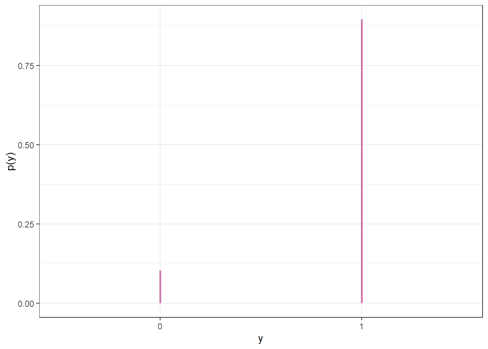
Figure 10.9: Posterior predictive probability of success on single trial
10.1.6 Posterior predictive distribution of sample count of success
Simulate a value of \(\theta\) from the posterior distribution.
Given the value of \(\theta\), construct a spinner that lands on success with probability \(\theta\). Spin the spinner 35 times and count \(y\), the number of spins that land on success.
Repeat steps 1 and 2 many times, and record the number of successes (out of 35) for each repetition. Summarize the simulated \(y\) values to approximate the posterior predictive distribution. To approximate the posterior predictive probability that exactly 31 students in a sample of size 35 prefer data as singular, count the number of simulated repetitions that result in 31 successes (\(y = 31\)) and divide by the total number of simulated repetitions.
n_rep =10000# simulate values of theta from the posteriortheta_sim =sample(theta, n_rep, replace =TRUE, prob = posterior)# for each simulated value of theta, simulate number of successes from Binomial(35, theta)y_sim =rbinom(n_rep, size =35, theta_sim)sim =data.frame(theta_sim, y_sim)sim |>head(10) |>kbl() |>kable_styling()
(a) Sample-to-sample distribution of \(y\), the number of successes in samples of size \(n=35\) for different values of theta in Example 10.1. Color represents the posterior probability of theta, with darker colors corresponding to higher posterior probability.
10.1.8 Continuous theta: Prior predictive distribution
n =35n_sim =10000theta_sim =sample(theta, n_sim, replace =TRUE, prob = prior)y_sim =rbinom(n_sim, n, theta_sim)sim =data.frame(theta_sim, y_sim)sim |>head(10) |>kbl() |>kable_styling()
theta_sim
y_sim
0.9664
34
0.7408
32
0.6907
23
0.9727
34
0.7652
27
0.6341
24
0.8949
32
0.6150
24
0.8281
30
0.8988
28
quantile(y_sim, 0.05)
5%
12
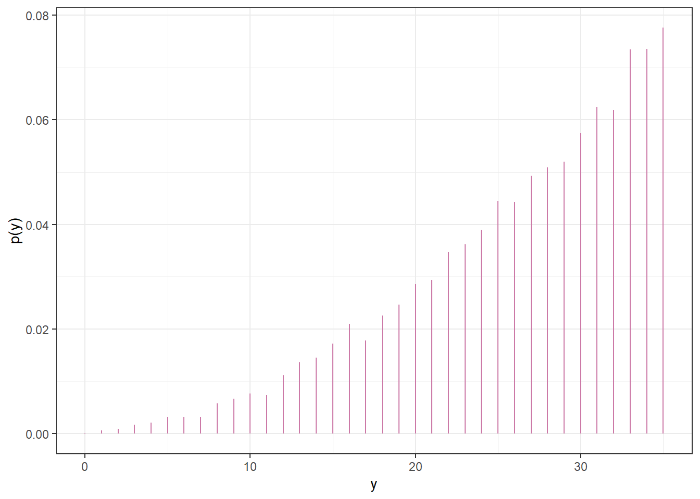
10.1.9 Continuous theta: Posterior distribution
# observed datan =35y_obs =31# likelihood of observed data for each thetalikelihood =dbinom(y_obs, n, theta)# posterior is proportional to product of prior and likelihoodproduct = prior * likelihoodposterior = product /sum(product)# Bound of 98% posterior credible intervalposterior_cdf =cumsum(posterior)# posterior 98% central credible intervalc(theta[max(which(posterior_cdf <=0.01))], theta[min(which(posterior_cdf >=0.99))])
[1] 0.7238 0.9651
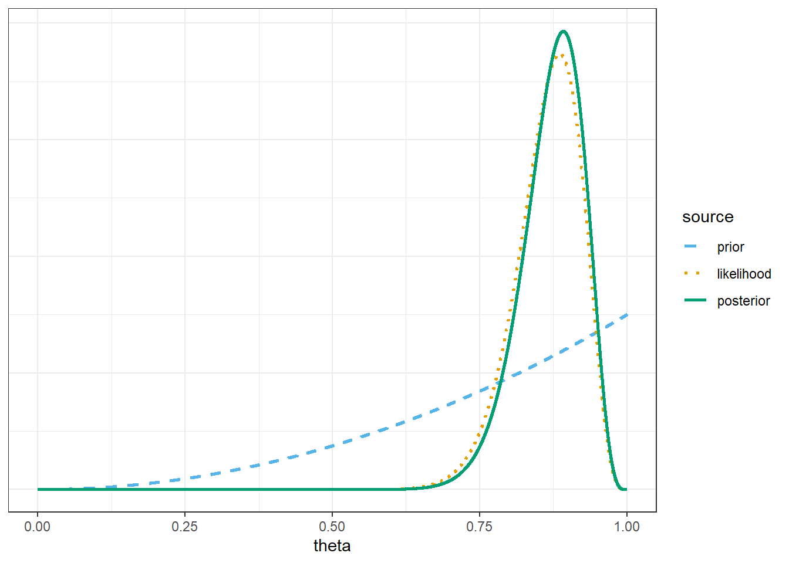
10.1.10 Continuous theta: Posterior predictive distribution
n =35n_sim =10000theta_sim =sample(theta, n_sim, replace =TRUE, prob = posterior)y_sim =rbinom(n_sim, n, theta_sim)sim =data.frame(theta_sim, y_sim)sim |>head(10) |>kbl() |>kable_styling()
theta_sim
y_sim
0.8964
31
0.8938
27
0.8737
32
0.8360
30
0.8597
28
0.8756
32
0.7553
29
0.8895
32
0.8856
31
0.8013
24
quantile(y_sim, c(0.025, 0.975))
2.5% 97.5%
24 35
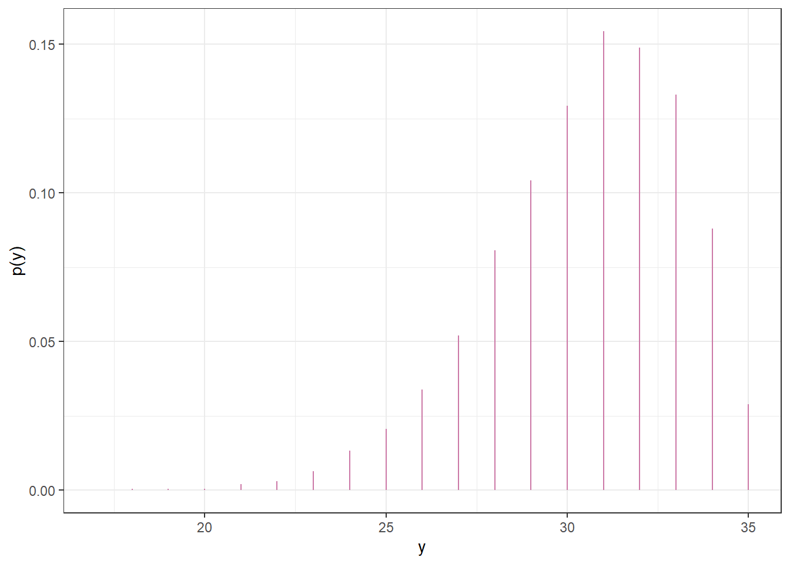
10.1.11 Continuous theta: Posterior distribution after observing large sample
# observed datan =1093y_obs =865# likelihood of observed data for each thetalikelihood =dbinom(y_obs, n, theta)# posterior is proportional to product of prior and likelihoodproduct = prior * likelihoodposterior = product /sum(product)# Bound of 98% posterior credible intervalposterior_cdf =cumsum(posterior)# posterior 98% central credible intervalc(theta[max(which(posterior_cdf <=0.01))], theta[min(which(posterior_cdf >=0.99))])
[1] 0.7619 0.8190
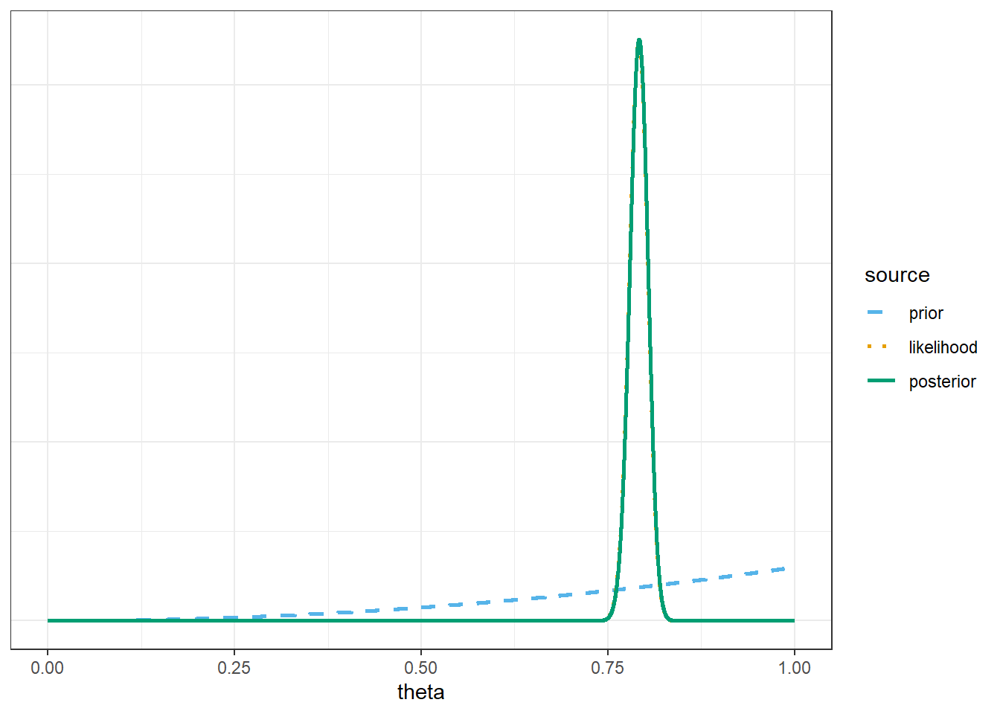
10.1.12 Continuous theta: Posterior predictive distribution (after observing large sample)
n =35n_sim =10000theta_sim =sample(theta, n_sim, replace =TRUE, prob = posterior)y_sim =rbinom(n_sim, n, theta_sim)sim =data.frame(theta_sim, y_sim)sim |>head(10) |>kbl() |>kable_styling()
theta_sim
y_sim
0.7889
30
0.7916
26
0.7911
29
0.7935
30
0.8025
25
0.7508
24
0.7958
26
0.8017
29
0.7906
30
0.7903
28
quantile(y_sim, c(0.025, 0.975))
2.5% 97.5%
23 32
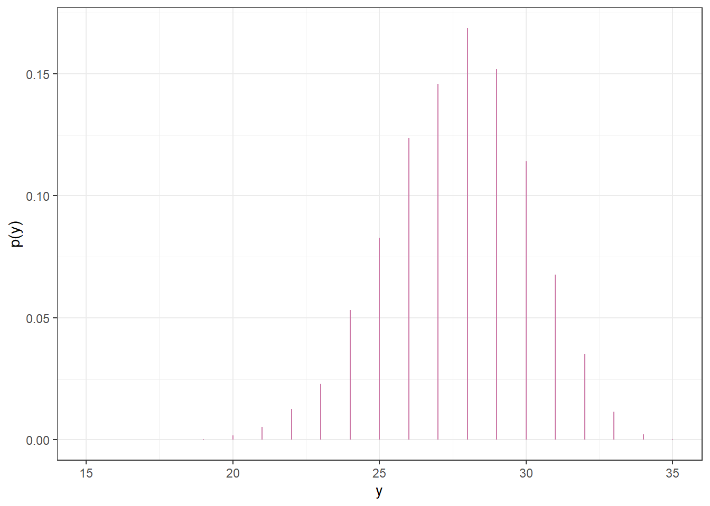
10.1.13 Sleep hours: Prior distribution
98% prior credible interval for mean sleep hours
qnorm(c(0.01, 0.99), 7.5, 0.5)
[1] 6.336826 8.663174
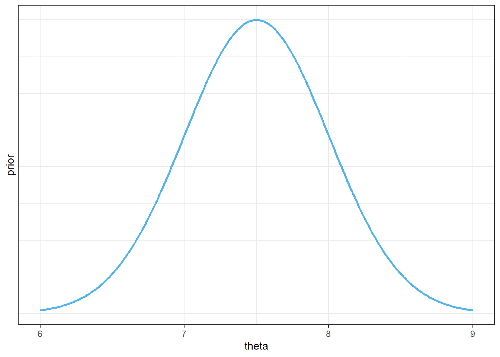
Figure 10.12: Example 10.7: Prior distribution of mean hours of sleep per night
10.1.14 Sleep hours: Prior predictive distribution
Simulate mean sleep hours \(\theta\) from Normal(7.5, 0.5) prior distribution
Given \(\theta\), simulate sleep hours for a single student \(y\) from Normal(\(\theta\), 1.5) distribution
Repeat many times to get many \((\theta, y)\) pairs.
Summarize the simulated \(y\) values to approximate the prior predictive distribution of sleep hours
n_rep =10000# simulate theta from prior distributiontheta_sim =rnorm(n_rep, 7.5, 0.5)# simulate y from Normal(theta, sigma) distributionsigma =1.5y_sim =rnorm(n_rep, theta_sim, sigma)# 95% prior prediction intervalquantile(y_sim, c(0.025, 0.975))
2.5% 97.5%
4.38855 10.59100
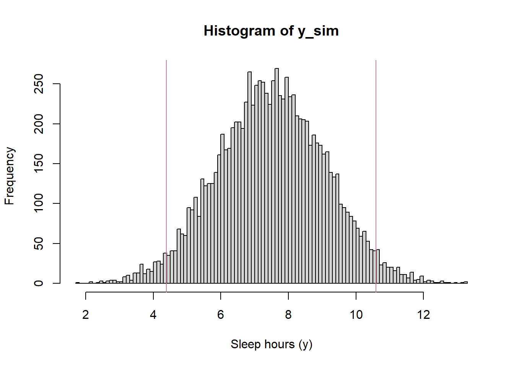
Figure 10.13: Example 10.7: Prior predictive distribution of sleep hours
10.1.15 Sleep hours: Posterior distribution
In principle, the posterior distribution of \(\theta\) given the observed sample (6.8, 7.2) can be found via the following.
Simulate \(\theta\) from the Normal(7.5, 0.5) prior distribution
Given \(\theta\), simulate a sample of size 2 from a \(N(\theta, 1.5)\) distribution (rounded to the nearest minute.)
If the simulated sample is (6.8, 7.2) keep the repetition; otherwise discard it
Repeat the process until enough non-discarded repetitions are obtained — all corresponding to samples with (6.8, 7.2).Summarize the simulated \(\theta\) values to approximate the posterior distribution.
However, the likelihood of producing a sample that matches the observed data is essentially 0, simply because there are so many possible samples (even if we round values to one decimal point and only discard samples for which the sample mean is not 7.0.)